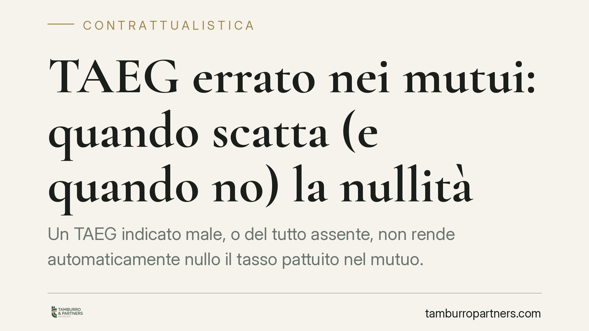

TAEG errato nei mutui: quando scatta (e quando no) la nullità
Un TAEG indicato male, o del tutto assente, non rende automaticamente nullo il tasso pattuito nel mutuo. Lo conferma la giurisprudenza di legittimità, che distingue tra rapporti ordinari e credito ai consumatori. Per chi ha sottoscritto un finanziamento la differenza è sostanziale: cambia ciò che si può pretendere in giudizio e, soprattutto, chi deve provare cosa.

Il punto della questione
Il TAEG (Tasso Annuo Effettivo Globale) e l'ISC (Indicatore Sintetico di Costo) esprimono il costo complessivo del finanziamento su base annua: non solo gli interessi, ma anche spese, commissioni e oneri accessori. Servono a rendere confrontabili offerte diverse.
Da anni i clienti contestano gli errori in questi indicatori chiedendo la nullità del tasso e l'applicazione del tasso legale, più favorevole. La Cassazione ha però ridimensionato questa strada: l'indicazione errata o mancante del TAEG/ISC non comporta, di regola, nullità automatica del tasso convenzionale.
Inquadramento normativo
La disciplina di riferimento è l'art. 117 del Testo Unico Bancario (TUB), che impone la forma scritta e l'indicazione del tasso e delle condizioni economiche a pena di nullità. La sanzione dell'art. 117, comma 7, TUB (sostituzione con il tasso minimo dei BOT) scatta però in caso di mancata indicazione del tasso di interesse, non di un errore nell'indicatore sintetico. TAEG e ISC hanno infatti funzione informativa e di trasparenza, non determinano il contenuto economico del contratto.
Diverso è il credito ai consumatori. L'art. 125-bis TUB prevede che, in caso di mancanza o nullità delle clausole su TAEG e costi, il contratto si consideri a condizioni più favorevoli per il consumatore (TAEG pari al tasso dei BOT, nessun onere aggiuntivo). Qui la tutela è rafforzata, ma opera solo nei rapporti che rientrano nella nozione di consumatore e di credito al consumo.
Perché la distinzione conta
La linea interpretativa separa due situazioni:
- Mutui e finanziamenti ordinari (imprese, professionisti, ma anche privati fuori dall'ambito del credito al consumo): l'errore sul TAEG/ISC non annulla il tasso pattuito. Il tasso resta quello concordato, salvo che manchi del tutto l'indicazione degli elementi essenziali.
- Credito ai consumatori: vale la tutela speciale dell'art. 125-bis TUB, con sostituzione automatica delle condizioni a favore del cliente.
Per chi ha un mutuo d'impresa o un finanziamento non riconducibile al credito al consumo, puntare sulla nullità del tasso è quindi una strategia fragile.
Implicazioni pratiche
Resta una via alternativa: il risarcimento del danno. Un TAEG scorretto può integrare una violazione degli obblighi di trasparenza e correttezza della banca. Ma qui l'onere della prova è interamente a carico del cliente, che deve dimostrare:
- l'esistenza dell'errore;
- il danno concreto subito;
- il nesso tra l'errore informativo e la propria scelta contrattuale (ad esempio, che con un TAEG corretto avrebbe scelto un'offerta diversa).
È un percorso probatorio impegnativo. Non basta allegare la discrepanza tra TAEG indicato e TAEG effettivo: occorre quantificare il pregiudizio e ricostruire l'alternativa che si sarebbe seguita.
Sul piano operativo, questo significa che l'analisi tecnica del contratto va fatta prima di promuovere qualsiasi contenzioso. Una perizia econometrica serve a stabilire se l'errore esiste, ma non è sufficiente a fondare la pretesa: va accompagnata dalla ricostruzione del danno.
Cosa fare in concreto
- Verificate la natura del rapporto: stabilite se il finanziamento rientra nel credito ai consumatori (art. 125-bis TUB) o in un mutuo ordinario. La tutela cambia radicalmente.
- Recuperate la documentazione completa: contratto, piano di ammortamento, documento di sintesi e ogni comunicazione precontrattuale.
- Richiedete una perizia tecnica per confrontare il TAEG/ISC dichiarato con quello effettivo e misurare l'eventuale scostamento.
- Ricostruite il danno in modo concreto, documentando le alternative disponibili al momento della sottoscrizione.
- Valutate costi e probabilità prima di agire: nel mutuo ordinario la nullità del tasso non è una scorciatoia, e la via risarcitoria richiede prove solide.
La trasparenza bancaria resta un presidio importante, ma la giurisprudenza chiede rigore a chi contesta. Un'impostazione tecnica corretta, fin dalle prime verifiche, è ciò che distingue una pretesa fondata da una destinata a non reggere il giudizio.
---
*Contributo informativo a cura di Tamburro & Partners - Avv. Giuseppe Tamburro. Non costituisce parere legale.*
Ogni contratto ha il suo equilibrio.
Se vuoi una revisione delle clausole o una redazione su misura, scrivi allo studio. Ti rispondiamo entro un giorno lavorativo.